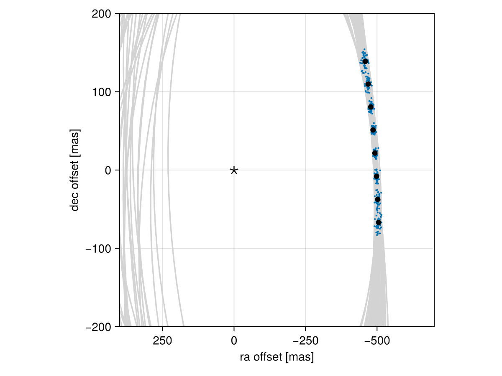

Posterior Predictive Checks
A posterior predictive check compares our true data with simulated data drawn from the posterior. This allows us to evaluate if the model is able to reproduce our observations appropriately. Samples drawn from the posterior predictive distribution should match the locations of the original data.
To demonstrate, we will fit a model to relative astrometry data:
using Octofitter
using Distributions
astrom_like = PlanetRelAstromLikelihood(Table(;
epoch= [50000,50120,50240,50360,50480,50600,50720,50840,],
ra = [-505.764,-502.57,-498.209,-492.678,-485.977,-478.11,-469.08,-458.896,],
dec = [-66.9298,-37.4722,-7.92755,21.6356, 51.1472, 80.5359, 109.729, 138.651,],
σ_ra = fill(10.0, 8),
σ_dec = fill(10.0, 8),
cor = fill(0.0, 8)
))
@planet b Visual{KepOrbit} begin
a ~ truncated(Normal(10, 4), lower=0.1, upper=100)
e ~ Uniform(0.0, 0.5)
i ~ Sine()
ω ~ UniformCircular()
Ω ~ UniformCircular()
θ ~ UniformCircular()
tp = θ_at_epoch_to_tperi(system,b,50420) # reference epoch for θ. Choose an MJD date near your data.
end astrom_like
@system Tutoria begin
M ~ truncated(Normal(1.2, 0.1), lower=0.1)
plx ~ truncated(Normal(50.0, 0.02), lower=0.1)
end b
model = Octofitter.LogDensityModel(Tutoria)
using Random
Random.seed!(0)
chain = octofit(model)Chains MCMC chain (1000×28×1 Array{Float64, 3}):
Iterations = 1:1:1000
Number of chains = 1
Samples per chain = 1000
Wall duration = 3.84 seconds
Compute duration = 3.84 seconds
parameters = M, plx, b_a, b_e, b_i, b_ωy, b_ωx, b_Ωy, b_Ωx, b_θy, b_θx, b_ω, b_Ω, b_θ, b_tp
internals = n_steps, is_accept, acceptance_rate, hamiltonian_energy, hamiltonian_energy_error, max_hamiltonian_energy_error, tree_depth, numerical_error, step_size, nom_step_size, is_adapt, loglike, logpost, tree_depth, numerical_error
Summary Statistics
parameters mean std mcse ess_bulk ess_tail r ⋯
Symbol Float64 Float64 Float64 Float64 Float64 Floa ⋯
M 1.1846 0.1009 0.0046 485.3377 530.5081 1.0 ⋯
plx 50.0003 0.0201 0.0006 1219.6304 623.3267 1.0 ⋯
b_a 11.4725 2.3635 0.1982 129.2746 215.7430 1.0 ⋯
b_e 0.1609 0.1164 0.0069 271.1219 378.0819 1.0 ⋯
b_i 0.6009 0.1810 0.0194 115.2227 88.5121 1.0 ⋯
b_ωy -0.0073 0.7519 0.0671 136.0053 464.2955 1.0 ⋯
b_ωx 0.0009 0.6829 0.0401 328.4494 737.9782 1.0 ⋯
b_Ωy -0.0504 0.7455 0.1050 52.6589 408.1203 1.0 ⋯
b_Ωx -0.0717 0.6789 0.0960 52.5244 429.0248 1.0 ⋯
b_θy 0.0744 0.0097 0.0003 1056.3115 634.9045 0.9 ⋯
b_θx -1.0037 0.0993 0.0035 804.0251 491.5196 1.0 ⋯
b_ω -0.2244 1.8353 0.0974 392.8178 735.0555 1.0 ⋯
b_Ω -0.5728 1.7967 0.2833 65.9779 213.6939 1.0 ⋯
b_θ -1.4967 0.0071 0.0002 997.2839 377.0934 1.0 ⋯
b_tp 42800.9771 4853.1312 294.6710 281.2272 406.0620 1.0 ⋯
2 columns omitted
Quantiles
parameters 2.5% 25.0% 50.0% 75.0% 97.5%
Symbol Float64 Float64 Float64 Float64 Float64
M 1.0012 1.1130 1.1809 1.2549 1.3885
plx 49.9616 49.9860 50.0001 50.0137 50.0416
b_a 7.9291 9.7782 11.0883 12.9222 17.4595
b_e 0.0059 0.0619 0.1403 0.2436 0.4108
b_i 0.1539 0.5037 0.6299 0.7215 0.8999
b_ωy -1.0925 -0.7812 -0.0104 0.7584 1.1070
b_ωx -1.0546 -0.6358 0.0065 0.6189 1.0795
b_Ωy -1.1018 -0.7814 -0.1037 0.7241 1.0848
b_Ωx -1.0685 -0.6953 -0.1542 0.5293 1.0554
b_θy 0.0569 0.0673 0.0745 0.0807 0.0933
b_θx -1.2107 -1.0689 -0.9967 -0.9317 -0.8180
b_ω -3.0220 -2.0284 0.0249 1.1777 2.9856
b_Ω -3.0261 -2.2853 -0.4844 0.8230 2.9115
b_θ -1.5104 -1.5015 -1.4969 -1.4920 -1.4821
b_tp 32063.3704 39891.3015 43892.5005 46156.2293 49833.2793
We now have our posterior as approximated by the MCMC chain. Convert these posterior samples into orbit objects:
# Instead of creating orbit objects for all rows in the chain, just pick
# every twentieth row.
ii = 1:20:1000
orbits = Octofitter.construct_elements(chain, :b, ii)50-element Vector{Visual{KepOrbit{Float64}, Float64}}:
Visual{KepOrbit{Float64}, Float64}(KepOrbit(12.6, 0.0106, 0.771, -1.07, 3.74, 45400.0, 1.35), 50.02380539072973, 4.123336847104888e6)
Visual{KepOrbit{Float64}, Float64}(KepOrbit(9.68, 0.107, 0.617, 1.91, 4.74, 43700.0, 1.45), 50.006624056316035, 4.1247535480041653e6)
Visual{KepOrbit{Float64}, Float64}(KepOrbit(13.1, 0.439, 0.608, 0.782, 5.52, 36600.0, 1.22), 49.995352510980496, 4.1256834813735527e6)
Visual{KepOrbit{Float64}, Float64}(KepOrbit(20.0, 0.32, 0.97, -3.03, 0.5, 47400.0, 1.26), 50.02548193766749, 4.123198658176033e6)
Visual{KepOrbit{Float64}, Float64}(KepOrbit(8.59, 0.292, 0.375, -1.99, 3.09, 45000.0, 1.21), 49.994193015216766, 4.1257791667368044e6)
Visual{KepOrbit{Float64}, Float64}(KepOrbit(11.1, 0.296, 0.648, -1.96, 2.02, 40100.0, 1.16), 50.01701928134915, 4.1238962849774254e6)
Visual{KepOrbit{Float64}, Float64}(KepOrbit(12.5, 0.143, 0.807, 1.19, 0.197, 42500.0, 1.32), 49.99207961178769, 4.1259535830824804e6)
Visual{KepOrbit{Float64}, Float64}(KepOrbit(11.3, 0.0238, 0.606, -0.355, 3.83, 47800.0, 1.3), 49.98545903247466, 4.1265000660690805e6)
Visual{KepOrbit{Float64}, Float64}(KepOrbit(10.9, 0.246, 0.575, 0.667, 6.22, 42100.0, 1.33), 50.00228424685817, 4.125111544538296e6)
Visual{KepOrbit{Float64}, Float64}(KepOrbit(16.6, 0.486, 0.829, 0.641, 5.17, 28600.0, 1.12), 49.98868865984456, 4.126233464605578e6)
⋮
Visual{KepOrbit{Float64}, Float64}(KepOrbit(11.1, 0.0599, 0.597, 0.0886, 4.24, 49400.0, 1.05), 49.94397375372358, 4.1299276869138163e6)
Visual{KepOrbit{Float64}, Float64}(KepOrbit(9.98, 0.117, 0.743, 1.6, 4.76, 42200.0, 1.22), 49.97628710551954, 4.1272573843769887e6)
Visual{KepOrbit{Float64}, Float64}(KepOrbit(12.0, 0.169, 0.728, -2.41, 3.26, 41400.0, 1.28), 50.016945274854024, 4.123902386811686e6)
Visual{KepOrbit{Float64}, Float64}(KepOrbit(9.42, 0.167, 0.499, -2.09, 3.65, 45400.0, 1.24), 50.01346349497431, 4.1241894799132817e6)
Visual{KepOrbit{Float64}, Float64}(KepOrbit(12.9, 0.148, 0.609, 2.57, 3.36, 36600.0, 1.12), 49.974288404104165, 4.1274224523637313e6)
Visual{KepOrbit{Float64}, Float64}(KepOrbit(14.4, 0.00103, 0.859, -2.35, 3.62, 40200.0, 1.27), 49.986097645742895, 4.126447346656731e6)
Visual{KepOrbit{Float64}, Float64}(KepOrbit(13.8, 0.213, 0.613, 0.322, 3.96, 49300.0, 1.0), 50.01822690695009, 4.1237967188185e6)
Visual{KepOrbit{Float64}, Float64}(KepOrbit(9.27, 0.163, 0.579, 2.41, 4.67, 44200.0, 1.26), 50.01455406020237, 4.1240995521367528e6)
Visual{KepOrbit{Float64}, Float64}(KepOrbit(11.1, 0.116, 0.653, 0.587, 4.69, 39400.0, 1.35), 49.983334333670406, 4.1266754759306475e6)Calculate and plot the location the planet would be at each observation epoch:
using CairoMakie
epochs = astrom_like.table.epoch' # transpose
x = raoff.(orbits, epochs)[:]
y = decoff.(orbits, epochs)[:]
fig = Figure()
ax = Axis(
fig[1,1], xlabel="ra offset [mas]", ylabel="dec offset [mas]",
xreversed=true,
aspect=1
)
for orbit in orbits
Makie.lines!(ax, orbit, color=:lightgrey)
end
Makie.scatter!(
ax,
x, y,
markersize=3,
)
fig
Makie.scatter!(ax, astrom_like.table.ra, astrom_like.table.dec,color=:black, label="observed")
Makie.scatter!(ax, [0],[0], marker='⋆', color=:black, markersize=20,label="")
Makie.xlims!(400,-700)
Makie.ylims!(-200,200)
fig
Looks like a great match to the data! Notice how the uncertainty around the middle point is lower than the ends. That's because the orbit's posterior location at that epoch is also constrained by the surrounding data points. We can know the location of the planet in hindsight better than we could measure it!
You can follow this same procedure for any kind of data modelled with Octofitter.